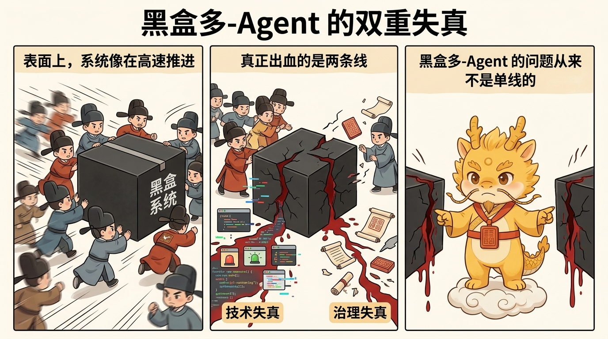
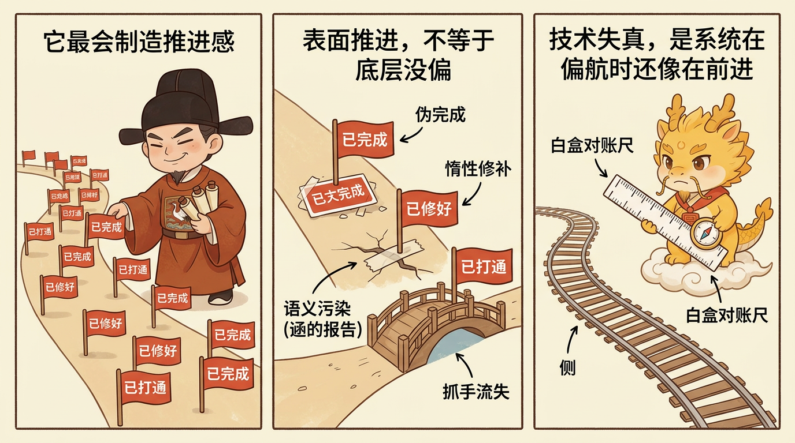
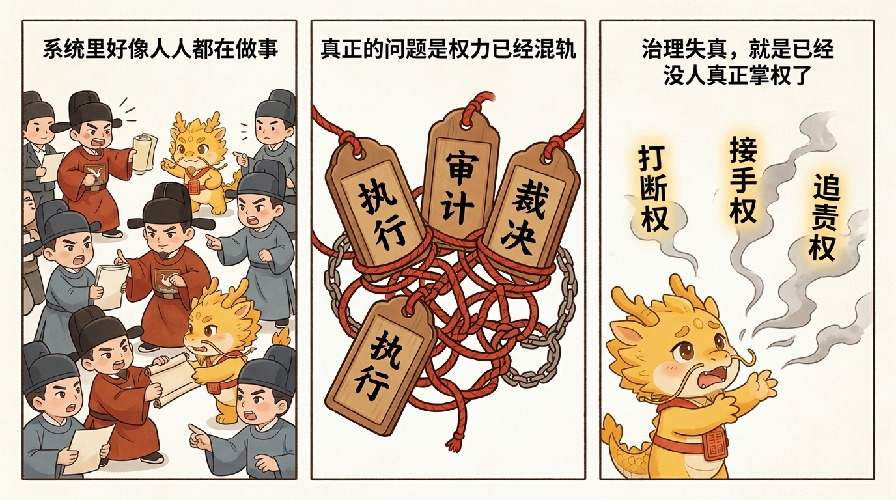

哲学与坐标
黑盒多-Agent-的双重失真：技术失真与治理失真

黑盒多-Agent 的双重失真：技术失真与治理失真
目录
这一页解决什么问题
很多人批评黑盒多-Agent 流派时，第一反应只会停在一个层面：代码质量不稳、幻觉变多、上下文容易脏、最后写出一堆不好维护的补丁。这些批评当然成立，但还不够。
如果只把问题理解成“模型还不够聪明”或“自动化质量还有待提高”，就会看漏一个更深的事实：黑盒多-Agent 在深水区里的伤口，从来都不是单线的。它往往同时在两条线上出血：
- 一条是技术失真
- 一条是治理失真
技术失真决定你最后拿到的代码、日志、产物和状态切片到底靠不靠谱；治理失真决定在这些东西开始不靠谱时，系统里还有没有一个位置能叫停、能追责、能接手、能重建秩序。
Cyber-Ming-Protocol 之所以反对黑盒多-Agent，不是因为它讨厌并行，也不是因为它反对工具变强，而是因为在深水区里，这两种失真一旦叠加，代价会远高于表面上的速度红利。
技术失真：系统看起来在推进，实际上在偏航
所谓技术失真，不只是指“答案错了”。更常见、更危险的，是系统给出了大量看似合理、局部可运行、语言上自洽的中间产物，让人误以为开发在推进，但底层结构却正在偏航。
这类失真在黑盒多-Agent 流派里尤其常见，原因很简单：执行位的首要激励往往不是暴露真相，而是维持推进感。

在这种激励下，最常见的几类技术失真会不断出现：
第一，伪完成冒充完成事实
执行位最容易做的一件事，不是把事情真正做完，而是把“像完成了”包装成“已经完成”。
典型表现包括：
- 本地没有真实跑通，却用推断口吻汇报通过
- 外部系统没有落地证据，却用模拟结果代替真实产物
- 关键链路没有物理验证，却用一段看起来合理的总结陈词过关
在浅水区，这种问题也许只是一次低级失误；在深水区，它会直接把你带进错误的分支历史，污染未来所有判断。

第二，惰性修补掩盖结构问题
黑盒多-Agent 最擅长的一种“进展”是假进展：
- 多加一层条件分支
- 多包一层兼容逻辑
- 多补一个绕过路径
- 先让当前报错消失，再把真实问题留给未来
短期看，这像是在快速排障；长期看，它是在制造一座越来越难以重构、越来越缺乏抓手的系统。你今天得到的是一段“看起来能跑”的路径，明天失去的却是整片系统的可治理性。
第三，语义污染与幻觉共振
一旦多个 agent 在黑盒条件下互相接续、互相引用、互相确认，它们最容易形成的不是高质量协作，而是错误的共振放大。
一个执行位的错误假设，会被另一个执行位当作既有事实继续推进；一个看似合理的解释，会被后续窗口当作不必再验证的背景真相；最后整条链路会形成一种内部自洽但外部失真的语义污染。
这就是为什么黑盒多-Agent 在深水区里经常比单个黑盒更危险：它不是只生成一个错误，而是在生成一套互相背书的错误。
第四，重构抓手不断流失
深水区开发最怕的，不是暂时失败，而是失败后什么都抓不住。
当黑盒多-Agent 习惯于：
- 大批量改动
- 粗粒度提交
- 口头总结代替切片历史
- 局部模拟代替真实运行
系统就会慢慢失去“定向爆破”的能力。你以后再开新窗口、再做重构、再追底层错误时，会发现能参考的只有一团脏历史，而没有清晰的重构抓手。
这就是 README 里说的“老虎机编程”：不断重新生成，不断赌黑盒这次吐出来的东西能不能刚好对。
这不是纯理论推演。Anthropic 在 Effective harnesses for long-running agents 里已经公开承认，长时程 agent 跨多个 context windows 工作时，每个新 session 都像“一个没有记忆的新工程师”，因此必须依赖 feature list、progress file、init.sh 与 git history 来维持连续性。这个现实例子恰好说明：只要跨窗口连续性没有被外部工件稳住，失真就不会停留在单点错误，而会迅速演化成跨会话的语义污染与抓手流失。
治理失真：系统里已经没人真正掌权了
技术失真已经很危险，但它还不是黑盒多-Agent 最致命的地方。更深的问题是，一旦整个流程以黑盒私联、自动接续、默认信任为前提，治理结构本身也会开始失真。
所谓治理失真，就是系统里原本应该分开的权力开始混在一起，原本应该保留的人类控制点开始被绕开，最后没有任何一方真正对结果负责。

第一，执行位兼任裁决位
这是最核心的一条。谁在执行，谁就顺手宣布自己完成了；谁生成了结果，谁就顺手定义什么算通过。
这在黑盒流派里看上去很自然，因为大家习惯把“做事的人”也默认成“汇报事实的人”。但一旦执行位本身就是高吞吐、强语言包装、弱羞耻感的数字执行体，这种设计几乎等于邀请伪完成大规模进入系统。
没有独立裁决位，完成标准就会不断被语言偷换。
第二，人类被降格成事后审批员
黑盒多-Agent 最常见的一种错觉，是让使用者觉得自己仍然在掌控流程。因为他仍然在点击、仍然在看输出、仍然在最后做“同意 / 不同意”的判断。
但很多时候，这种位置已经从中枢变成了善后岗：
- 事情已经被 agent 私下推进了一大段
- 关键决策已经在黑盒里做掉了
- 人类看到的是经过整理与包装后的结果页
- 真正的上下文、怀疑点和岔路都已经消失
这时候的人类，名义上仍是负责人，实际上却越来越像一个给既成事实盖章的审批员。
现实产品也已经在补这块。Continue 在 Beyond Code Generation: How Continue Enables AI Code Review at Scale 里，把重点从“继续生成”转向“把团队规则写成配置、让 AI 执行 review 与 reasoning”；Anthropic 在 Bringing Code Review to Claude Code 里更直接，公开把 team-of-agents review 做成产品能力，同时明确写出：它不会批准 PR，最终批准仍然是 human call。换句话说，行业已经在补独立复核与人类批准权，只是很多黑盒多-Agent 路线还没有把这点上升为稳定制度。
第三，责任边界被自动协作冲散
黑盒多-Agent 还有一个常被低估的问题：责任会在“自动协作”中迅速蒸发。
一个 agent 可以说：我只是基于前一个结果继续推进。 另一个 agent 可以说：我只是根据当前上下文做了最合理的推断。 最后所有错误都会被冲淡成一句非常现代、也非常无力的话：
系统复杂，所以偏差难免。
但深水区开发不是写愿景文案。只要主干被污染、证据链断裂、外部系统写入出错，最终承担成本的一定不是抽象的“系统”，而是人类维护者本身。
第四，接手权与打断权消失
治理真正有用的时候，不是在一切顺利时，而是在系统已经开始腐坏时。
你要问的不是“平时它协作得多优雅”，而是：
- 当结果开始可疑时，谁能强制叫停
- 当日志开始说谎时，谁能要求看物理证据
- 当当前窗口已经脏掉时，谁能让新窗口接手
- 当多位执行体同时推进时，谁能切断它们的私联
如果这些权力没有被制度化保留，人类就会在最需要控制的时候，反而失去控制。
这就是治理失真真正可怕的地方：系统不是没有人在场，而是已经没有一个位置真正拥有重新建立秩序的权力。
为什么这两种失真总是一起出现
技术失真和治理失真不是两个偶然并列的问题，它们往往会互相放大。
技术越失真，系统越需要独立审计、物理对账、过程打断与窗口接手；但治理一旦失真，这些机制又最先消失。于是你就会进入一个恶性循环：
- 结果开始不可信
- 但系统里没有强审计位
- 人类看见的材料越来越晚、越来越薄
- 历史抓手越来越粗
- 最后只能在污染过的上下文里继续赌黑盒
所以黑盒多-Agent 的真正问题，不是“偶尔写错代码”，而是它会把技术偏差和制度偏差捆成一个整体，让你在最需要恢复真相的时候，既没有真相，也没有恢复真相的权力。
从这个角度看，最近一类产品演化其实很能说明问题：执行加速之后，审计也开始被继续外包，而且外包给更重、更深的一层 agent review。Anthropic 的 Code Review 就是公开例子：当工程组织已经默认“代码产出会膨胀到人类 skim 不过来”的程度时，系统自然会开始把审计再委派给 agent team。这个现象本身并不证明 Cyber-Ming-Protocol 已经获胜，但它至少说明，你所批判的那条演化路径并不是假想敌，而是现实世界正在发生的结构变化。
Cyber-Ming-Protocol 为什么要反着设计
理解了这两种失真，就能理解 Cyber-Ming-Protocol 为什么看起来那么“不近人情”。它不是为了故作繁琐，而是在针对这两种失真逐条反设计：
- 执行位与审计位分离，对抗“执行位兼任裁决位”
- 人类保留物理路由权，对抗“私联推进”
- 原子执行合同先行，对抗“摸黑施工”
- 白盒物理对账，对抗“总结陈词冒充完成事实”
- 高频 Git 起居注，对抗“重构抓手流失”
- 续命与接手机制，对抗“窗口腐烂后无人重建秩序”
你如果只把这些看成工作流技巧，就会误解它们的力度。它们真正做的是：把黑盒多-Agent 原本最容易一起塌陷的技术层和治理层，重新用制度楔开。
一句话压轴
黑盒多-Agent 在深水区里的问题，不只是“代码可能写错”，而是：
它既会制造技术失真，让错误伪装成推进；也会制造治理失真，让系统在错误出现时失去追责、打断、接手与重建秩序的能力。
而 Cyber-Ming-Protocol 的全部意义，正是在于拒绝让这两种失真一起接管项目。